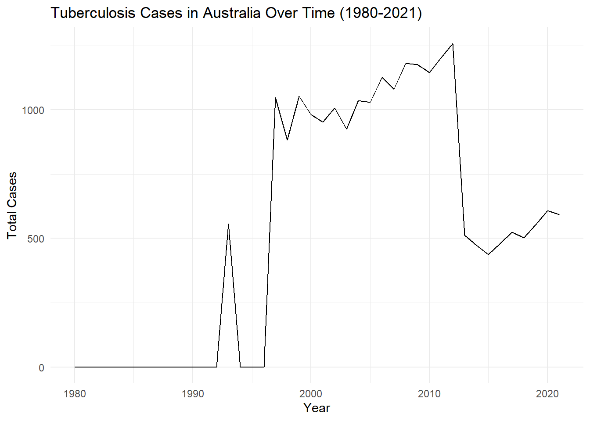
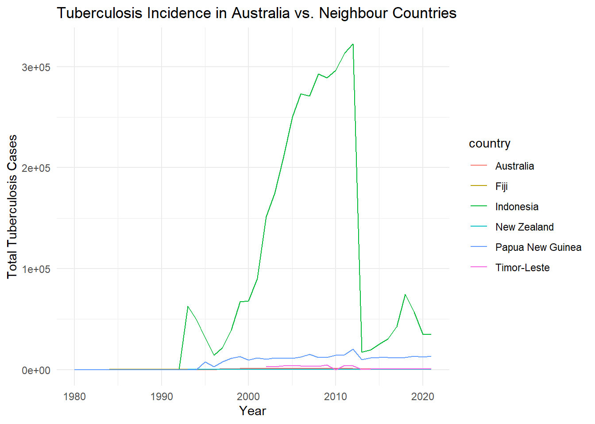
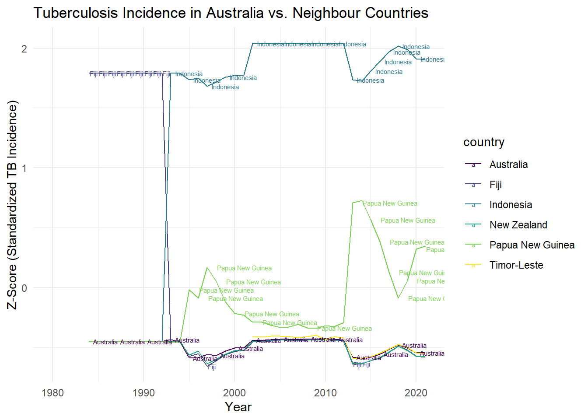

tuberculosis %>%
select(country) %>%
distinct() %>%
n_distinct() [1] 217The World Health Organisation (WHO) routinely reports statistics on tuberculosis. WHO says: “Every year, 10 million people fall ill with tuberculosis (TB). Despite being a preventable and curable disease, 1.5 million people die from TB each year – making it the world’s top infectious killer.” This question is about the statistics reported by WHO on TB notifications.
The data and dictionary were downloaded from https://www.who.int/teams/global-tuberculosis-programme/data. We have made them available in the template repo.
217 countries in total are recorded.
tuberculosis %>%
select(country) %>%
distinct() %>%
n_distinct() [1] 217The earliest year in the data is 1980 while the latest year in the data is 2021. This means the data contains statistics on tuberculosis from 1980 up to 2021.
min(tuberculosis$year)[1] 1980max(tuberculosis$year)[1] 2021new_sp, new_sn, new_su, new_ep and new_oth. Create a new variable which sums these values for each year, for each country. Make an appropriate plot to show the counts for Australia over time. Describe the pattern, and try to explain it, which might require searching for more information about TB reporting.tuberculosis_new <- tuberculosis %>%
group_by(country, year) %>%
mutate(total_cases = sum(new_sp, new_sn, new_su, new_ep, new_oth,
na.rm = TRUE))
ggplot(tuberculosis_new %>% filter(country == "Australia"),
aes(x = year, y = total_cases, group = 1)) +
geom_line() +
labs(
title = "Tuberculosis Cases in Australia Over Time (1980-2021)",
x = "Year",
y = "Total Cases"
) +
theme_minimal()
The line graph portrays that from 1980 to 1992, Australia consistently reported low or zero cases of tuberculosis (TB). According to the Australian Department of Health and Aged Care, notification rates of new cases of TB remained stable in Australia for several years and were low by world standards during that time. This suggests that TB was well-controlled during those years; in fact, the Australian Tuberculosis Campaign (ATC) ran from 1948 to 1976 and provided citizens with free diagnostic chest X-rays, medical care and a Tuberculosis Allowance while being treated. This campaign ended in 1976 following marked decreases in the prevalence of TB.
However, this changed in 1993 where we observe a sharp increase in TB cases, which eventually reached a peak in 1997. This could be attributed to increased immigration from countries with higher TB incidence rates as well as changes in reporting practices. For instance, the populations for which notified TB rates were highest during that period included the overseas-born from high prevalence countries and indigenous Australians. In 1997, the Australian Department of Health and Aged Care reported that almost half of all TB notifications in the overseas-born were from India, Indonesia, China, The Philippines and Vietnam; these four countries, together with Bangladesh and Pakistan, accounted for more than 50% of all new TB cases notified annually throughout the world during that time.
This upward trend continued until 1999, which was later followed by a slight decreasing trend in TB cases from 2000 to 2005. TB incidence rates started to increase again from 2006 onwards until 2013; fortunately, the number of reported cases remained relatively stable, fluctuating around the 1000-case mark annually. This then dropped significantly in 2013 by almost half, with incidences remaining around the 500-600 mark until 2021. The decline in TB incidences may be due to Australia improving and expanding its pre-migration detection of tuberculosis, where the number of active TB diagnoses increased in pre-migration assessments from 2015-2018, thereby signifying the value of pre-migration testing in reducing the TB burden in Australia.
ggplot(tuberculosis_new %>%
filter(country %in% c("Australia", "Fiji", "Indonesia",
"New Zealand", "Papua New Guinea",
"Timor-Leste")),
aes(x = year, y = total_cases, color = country)) +
geom_line() +
labs(
title = "Tuberculosis Incidence in Australia vs. Neighbour Countries",
x = "Year",
y = "Total Tuberculosis Cases"
) +
theme_minimal()
tuberculosis_new <- tuberculosis_new %>%
filter(country %in% c("Australia", "Fiji", "Indonesia",
"New Zealand", "Papua New Guinea", "Timor-Leste")) %>%
group_by(year) %>%
mutate(mean_cases = mean(total_cases, na.rm = TRUE),
sd_cases = sd(total_cases, na.rm = TRUE))
tuberculosis_new <- tuberculosis_new %>%
mutate(z_score = (total_cases - mean_cases) / sd_cases)
ggplot(tuberculosis_new, aes(x = year, y = z_score,
color = country, label = country)) +
geom_line() +
geom_text(data = tuberculosis_new %>%
filter(year == max(year)),
aes(label = country),
hjust = -0.2,
nudge_x = -0.1,
check_overlap = TRUE,
size = 2) +
scale_color_viridis(discrete = TRUE) +
labs(
title = "Tuberculosis Incidence in Australia vs. Neighbour Countries",
x = "Year",
y = "Z-Score (Standardized TB Incidence)"
) +
theme_minimal()
We cannot directly compare the incidence of TB between countries as it doesn’t take into account the differences in population sizes. This can lead to misleading interpretations of the data as some countries may appear to have significantly higher TB cases when actually, this could be attributed to them having much larger populations. For instance, in our previous line graph, Indonesia seems to exhibit the highest TB incidence rates relative to Australia and other neighbouring countries. However, Indonesia’s population is approximately 10 times larger than Australia’s, thus making it an unfair comparison.
To resolve this issue, we standardize the data by calculating the z-scores of each country for the TB cases. This transformation allows us to see how each country’s TB cases deviate from the mean in terms of standard deviations (i.e. mean being the average number of TB cases reported for a specific year, considering all the selected countries). The z-score is then calculated for each country based on that year’s mean and standard deviation. Hence, we can directly compare the countries’ TB cases while considering the variability in the data, as z-scores standardize the data by measuring how many standard deviations a data point is from the mean.
The new plot above shows that Australia’s TB incidence was relatively low compared to its neighbours. Throughout the observed years (1980-2021), TB incidence in Australia had generally remained low over the years. Similarly to Australia, both New Zealand and Timor-Leste maintained low and relatively stable TB incidence rates, with only minor fluctuations. Interestingly, Timor-Leste’s TB incidence data was available only from 2002 onwards; this could be due to a variety of factors such as the transitions the country underwent during its early years of independence. Fiji also had a low TB incidence from 1993 until 2021; prior to this however (1980-1993), Fiji’s TB cases was relatively higher compared to Australia’s.
In contrast, Indonesia had the highest number of TB cases throughout 1993-2021. We can see that from the early 1990s to early 2000s, Indonesia experienced a substantial increase in TB cases while Australia continued to maintain a consistently low rate. Although both countries did experience TB incidence fluctuations in recent years, Indonesia’s rate continued to remain significantly higher than Australia’s.
Australia also differed in terms of TB incidence trends; for instance, when Papua New Guinea experienced a sharp increase in TB incidence during the early 2010s, Australia showed a decline instead. In fact, since 1995, Papua New Guinea had a consistently high TB incidence rate and seemed to have struggled to reduce cases significantly.